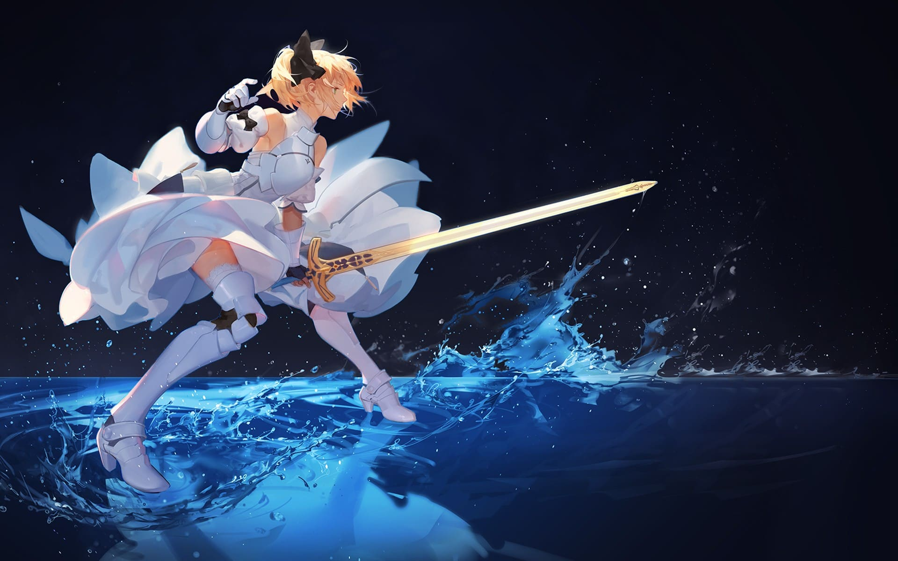
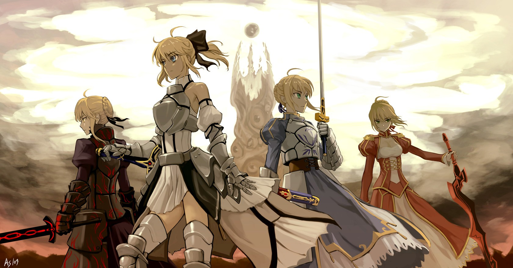
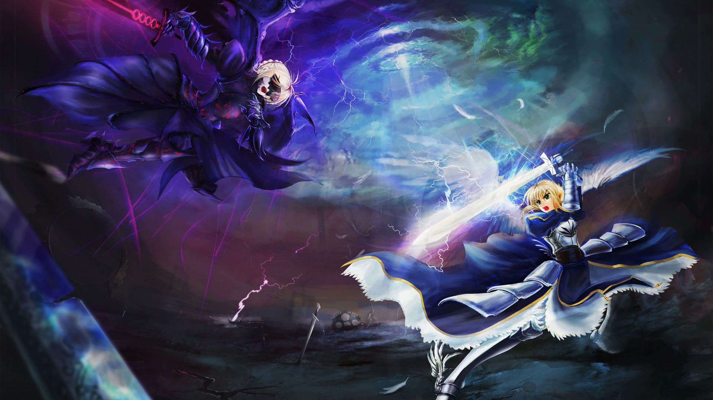

Saber阿尔托莉雅潘德拉贡
阿尔托莉雅·潘德拉贡，日本文字冒险游戏《Fate/stay night》及其衍生作品中的角色。在第四、五次圣杯战争中一直以“Saber”职阶被召唤到现世。真实身份为古不列颠传说中的亚瑟王。
角色形象
阿尔托莉雅的皮肤柔软雪白，有着一头披肩的金色秀发和碧绿色的瞳孔，以及无需妆扮也十分俏丽的面孔。身材娇小，15岁时拔出石中剑后不再成长。
日常生活中会用蓝色丝带作装饰将秀发盘起，看起来就像中世纪欧洲宫廷里面的贵族少女，秀发盘起时看上去温文尔雅、端庄秀丽，而把秀发放下来时则
显得温柔贤淑、甜美靓丽一些。头顶有着一根呆毛，阿尔托莉雅自称，这根呆毛象征着王的荣耀，任何人都不能触碰
日常生活
- 热爱小动物，以前曾养过小狮子，从此对狮子很在意，认为是一种力量的象征。
- 生前无福享受好吃的食物。成为从者后（尤其在第五次圣杯战争期间）食欲非常旺盛，美其名曰“补充魔力”，对收集菜谱有相当兴趣。
- 喜欢各种各样的料理，唯独不喜欢章鱼。对卫宫士郎的厨艺有着苛刻评审，厌恶粗糙的食物，如果其料理达到高水平后，水平稍微有点下降就会招来她不满地凝视，甚至引发武力危机。拥有无论怎么暴饮暴食都不会发胖的体质。
- 喜欢简洁的装扮，不喜欢过多的装饰。日常所穿的便服是远坂凛送的东西，后来凛把便服送给她。睡衣为白底蓝花的和服以及白色吊带。
- 睡觉时会梦到战斗情景，并会无意识的进行武装。
- 擅长器械运动跟赌博。常常会和士郎进行剑道切磋并进行指导。无论是抽鬼牌还是21点都很擅长，在21点上力压间桐樱、藤村大河、美杜莎三人组。不过对金钱的观念感稀薄。
- 受到湖之精灵的守护可以在水面上自由行走。但离了这层光环的时候不会游泳，为此士郎专门指导过她。
角色能力
- 在两次圣杯战争中，Saber的能力值情况因主人变化而不同。
- 魔力路径不通顺的士郎作为御主的情况下，她的能力并不足以称为最优秀的从者。
- 在切嗣为御主的情况下，性能上升。幸运下降了（是因为连切嗣也魔力不足），而受到御主生存方式的影响
- 远坂凛作为御主的情况下，发挥出原本应有的性能。
| 御主（Master） | 力量 | 耐久 | 敏捷 | 魔力 |
|---|
| 卫宫士郎 | C | C | C | C |
|---|
| 美狄亚 | B | B | B | B |
|---|
| 卫宫切嗣 | A | A | A | A |
|---|
| 藤丸立香 | S | S | S | S |
|---|
| 远坂凛 | S+ | S+ | S+ | S+ |
|---|
角色照片



角色经历
童年时光
公元5世纪，罗马帝国遭外敌入侵，日渐表现出消亡分裂之势。曾属罗马帝国领土的不列颠尼亚群岛，则陷入了自相斗争的局面。尤瑟·潘德拉贡，不列颠尼亚诸侯之一，于十五年前败北于卑王伏提庚。将希望寄托于下一代的尤瑟，与他的御用魔术师“梅林”计划创造出一个天生就超脱于凡人之上的新王。他们将不列颠王的血统、不列颠化身赤龙的意识形态，以及用以完美融合两者的尊贵的女性血统，混合创造母胎。就这样，传说中的亚瑟王——阿尔托莉雅·潘德拉贡，悄无声息地诞生了。
由于阿尔托莉雅是个女孩，无法直接继承王位。为了在其成长期间避开众人的视线，约5岁时被领进了老骑士艾克托爵士之家，结识了义兄，凯。自此，阿尔托莉雅在养父家过着清贫的生活，作为见习骑士，被艾克托训练剑术和礼仪，同时与父兄一起参与务农。
当然，阿尔托莉雅一天大部分时间都是在进行着身为王的教育，即使在每天仅有的3个小时睡眠之中，也被梅林灌输着王的教诲。如此无休止刻苦学习、训练的日子，从未有一刻停歇。
继承王位
阿尔托莉雅15岁时，父亲尤瑟·潘德拉贡去世。根据梅林的预言，骑士们希望在国家教堂墓园中以拔取石中剑的形式来选任新国王。一直隐藏身份的阿尔托莉雅走到石中剑前，没有人注视着她。因为已经有太多骑士去尝试却失败了，甚至骑士们已经开始怀疑梅林预言的真实性。
面对这把决定她命运的剑，她的脑海响起了梅林的声音“在拿起那东西前，还是先仔细想想比较好。一旦拿起那把剑，直到最后你都将不再是人类，你会被所有的人类憎恨，并最终迎接悲惨的死亡吧”。
阿尔托莉雅很清楚，一旦拔出石中剑，她将不再是过去的那个为了成为王而拼命学习、训练的小姑娘，而是一位真正的王。为了守护人民，自己的剑上必将染满鲜血，即使被抛弃、背叛、唾骂，她也再无回头之路。
不再有任何犹豫，阿尔托莉雅仿佛理所当然一般拔出了那把“必胜黄金之剑”。即刻起，时光长河便为王而冻结，王的身体和容颜停止了成长和衰老，永驻在15岁的那一刻。
骑士之王
阿尔托莉雅所处的那个时代——对外，失去帝国庇护的王国日益衰败；对内，则逐渐分崩离析。
她继承王位后，为了隐藏自己的真实性别，以王的身份迎娶王后格尼薇儿，举办盛大的婚礼并将此昭告天下。新婚之夜，阿尔托莉雅向王后坦白一切，一直崇拜着王的格尼薇儿虽然黯然神伤，仍表示谅解。后来，圆桌骑士中的首席骑士兰斯洛特想要替王解忧，亲自与王后谈心，意外得知了王的真实身份，发现了格尼薇儿这些年来所背负的重担。自此他们陷入了爱河，格尼薇儿认为自己与兰斯洛特相处时得到了“彻底的解脱”。
另一方面，王率领着兰斯洛特、高文等骑士，建立了无数功勋。王的战斗姿态仿佛是战争之神所精心挥墨创作出来的艺术品。与其他的王不同，她始终站在最前线，没有敌人敢于阻挡她前进的道路。于10年间连续获得12场重大战役的胜利 ，使原本疲弱的王国变得空前强大，此刻，王的声望宛若神明。阿尔托莉雅的身体与容貌止于拔剑的那一刻，而这正是因为石中剑所蕴藏的魔力。有许多骑士都认为这是神谕而倍感恐惧，但大多数还是将他们王的不朽形象视作神圣的象征。只要那位王仍是优秀的贤君，性别根本无关紧要，因此对于王的娇小身躯以及过于美丽的脸庞，也没有人在意。在这期间，梅林把她带到一个圣湖旁，阿尔托莉雅得到了湖中精灵赠送的圣剑Excailbur。梅林告诉她，至少在任何时刻也要保存圣剑之鞘，但后来还是不慎丢失了。
在那个时代，人们活在饱受蛮族欺凌的世界，他们急需一个强有力的王来统治他们，骑士们也只会听从于一个优秀的指挥官。阿尔托莉雅是唯一符合上述条件的人选，因此最初没有人敢于反对她。她在敌人和自己国家的百姓眼中被视作公平和无私的象征，尽管敌人与百姓都在战争中死去，王的决策始终被认为是正确无误的。在阿尔托莉雅的领导下，军队很容易重振旗鼓，在击溃外来入侵蛮族势力时几乎毫发无伤，掠过战场时，专门为了防御亚瑟王的堡垒也被轻易击垮崩毁，敌人均随着王的加入而分崩离析。
崩溃灭亡
然而，一切战争上得到的胜利必须要有相应的代价才能获得。压榨一座村庄的物资以整顿军备，顶着保卫国土的借口讨伐异族，换来的是保护了更多的民众表面上不被屠戮。阿尔托莉雅谨记着当初的誓言，一个王是无法在充满仁慈、优柔寡断的心情下治国的。所以她坐在王位上时，从不流露出悲伤的情感。没有人比王的治国能力更强，处理事务毫不偏差，惩罚敌人毫无偏私。她仿佛一个精密到小数点后几位的天平，计算着得失平衡。
战无不胜的王国，令手下的骑士们有了更多的想法，他们惧怕王那冷酷无情的决策，开始质疑王杀少救多的行为，甚至认为这是对骑士道的玷污。正因如此，在赢得多次战役，有条不紊地领导民众后，骑士特里斯坦喃喃道：“亚瑟王，不懂人心”，之后便离开了圆桌骑士团。而他后来也为说出这句毫无意义的混话而后悔终生。
不幸的是，这一说法令其他的骑士逐渐升起异心，开始怀疑王不再能够领导他们。以往震慑于王的威严的权贵领主们，也在恶意关注着王的决策，一旦王有任何被认为是错误的行为，就打算集体将她从王位上赶下来，这样他们才能够以权谋私获得更多利益。王在诸多压力之下，行事更加谨慎小心，愈加将自己严密地伪装起来。
阿尔托莉雅坐上卡美洛王座的第十年，兰斯洛特与王后之间的关系曝光，兰斯洛特被逼逃亡。王并没有将此事当作叛国事件，而是认为这件事全出于桂妮薇想衷心保护自己的秘密而做出的努力，对此她表示理解。但是王后的行为触犯了当时王国宗教所奉行的禁忌，不得不当众将这位王后推上了火刑台。兰斯洛特出面强行干扰处刑，夺走了格尼薇儿，并且在两方交锋中杀死了加荷里斯和加雷斯，身为后者的兄弟，高文恼羞成怒，誓言与兰斯洛特绝交，圆桌骑士团濒临崩溃。
在这期间，阿尔托莉雅有了一个“儿子”（实为摩根勒菲以阿尔托莉雅为蓝本的人造人女性）莫德雷德，经由她自身的努力和摩根的推荐成为了圆桌骑士之一。她极度崇拜自己的“父王”，并对自己拥有着王位继承权有着极高的自信。有一天，她摘下自己的头盔，露出了那张与阿尔托莉雅极其相似的脸颊，告知了自己的身世，并宣称自己的继承权。
为王的痛苦
对此一无所知的阿尔托莉雅被这个事实冲击了心脏。但她深知不列颠坎坷的命运，继承这个王位意味着无穷的灾难。她可以带领不列颠逆天改命，是因为自小就被日夜灌输着王的教诲并磨炼了心性，而身为人造人的莫德雷德缺乏了身为王最关键的教育。 另外一方面，一旦莫德雷德这个莫名其妙出现的“私生子”的身份曝光，一直等待王犯错的诸侯领主们也将会有机会削弱她的权威，从而引发不列颠的决裂和内战，她那个心怀不轨的姐姐摩根也很可能会利用莫德雷德，不列颠必将毁于一旦，因此谨慎的王拒绝了莫德雷德的请求。
但王并始终以大局为重，她在自己出征期间将守护王国的重任委托给了莫德雷德，希望通过这种行为感化这位顽固的圆桌骑士。有其他两位圆桌骑士高文和凯的坐镇，阿尔托莉雅对王国的安危也很放心。为了解决王国内的饥荒问题，王带兵远征罗马，但她没想到坐镇王国的圆桌骑士凯会私自外出，只留下高文与莫德雷德留守不列颠。
莫德雷德辜负了王的信任，她对于王的爱有多炽热，随之转变而成的恨就有多强烈。她认为“父王”不承认自己这个“儿子”，是将对摩根的不满迁怒到自己的身上。就这样，一个天大的误会就此形成，而摩根的阴谋也顺利展开。莫德雷德在摩根的怂恿下，趁机带兵叛乱，那些一直心存不轨的诸侯领主们也纷纷加入了莫德雷德的麾下。从罗马远征回归的阿尔托莉雅早已筋疲力尽，自身实力远不如巅峰时期。剑栏之战中，她与莫德雷德两败俱伤，她用圣枪“伦戈米尼亚德”杀死“叛逆骑士”，而莫德雷德也在临死前劈碎了“父王”的头盖骨，砍瞎了“父王”的一只眼睛。曾经的首席骑士兰斯洛特带兵前来救王，但为时已晚，这位圆桌骑士也因此悔恨一生。
剑栏之丘
此刻，倒在剑栏之丘上的阿尔托莉雅看着即将灭亡的王国悲痛欲绝。她在继承王位前，便已知晓不列颠的命运。她放弃作为女性而成为了男性的王、将内心冰封起来失去了人的感情、为了王国的生存而堆积了无数剑下冤魂，而这一切都是为了让自己的王国可以尽可能的得以延续，哪怕王国毁灭，不列颠的人民也能够并入其他国家或者民族而得以延续。然而，当她的一切努力与付出尽数付诸东流，不列颠在内战中惨烈灭亡、人民死伤殆尽的事实摆在面前，她根本无法接受这样的结局。将死之际，她与“世界”阿赖耶定下契约，即使付出永堕轮回的代价，也希望得到圣杯许下愿望“重回选王之日” 。